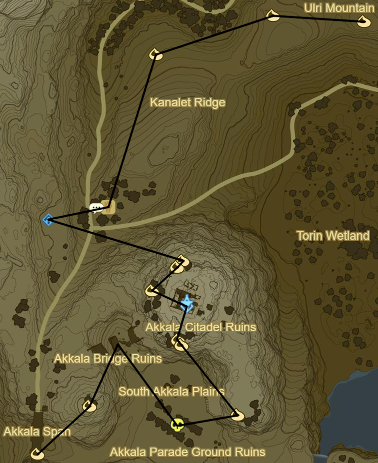
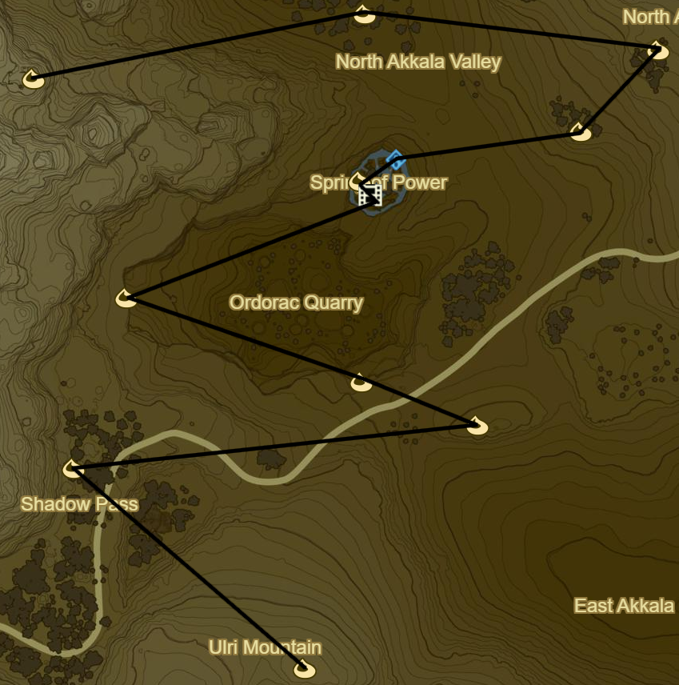
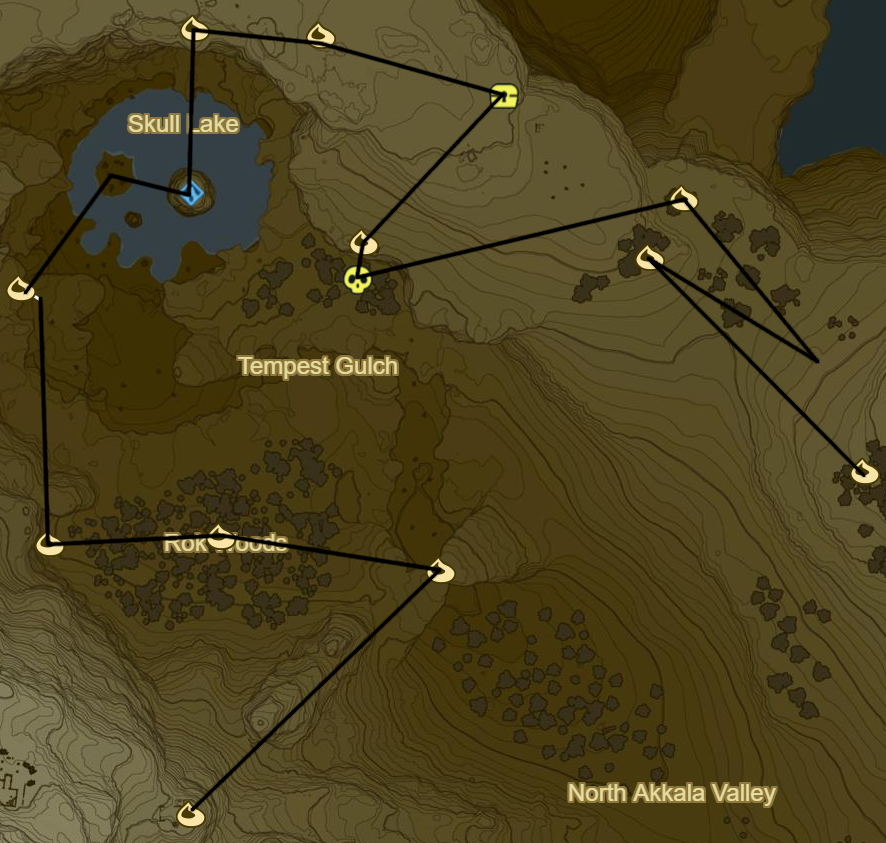
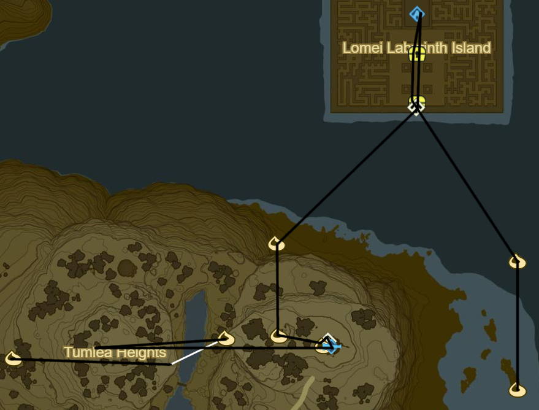
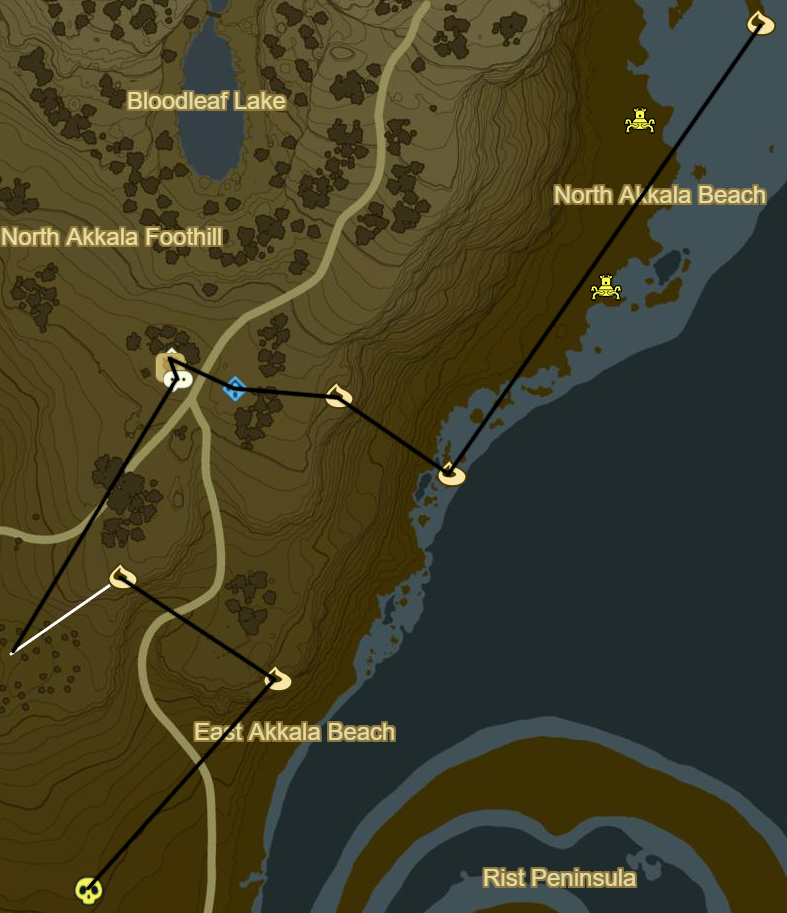
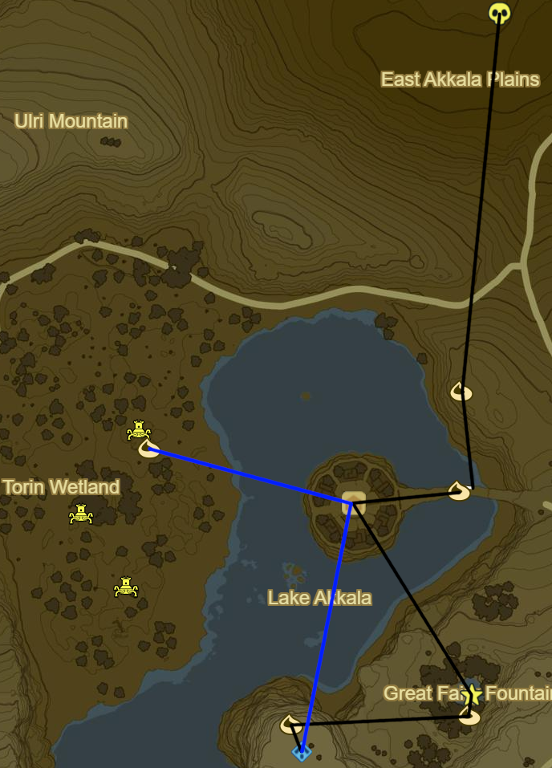
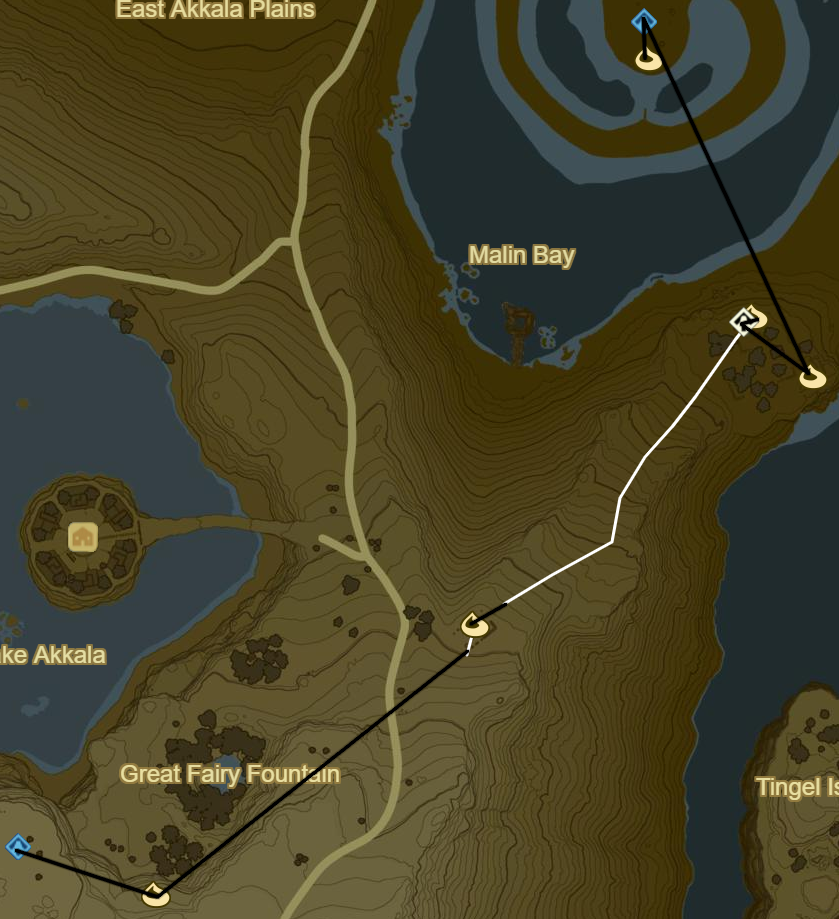
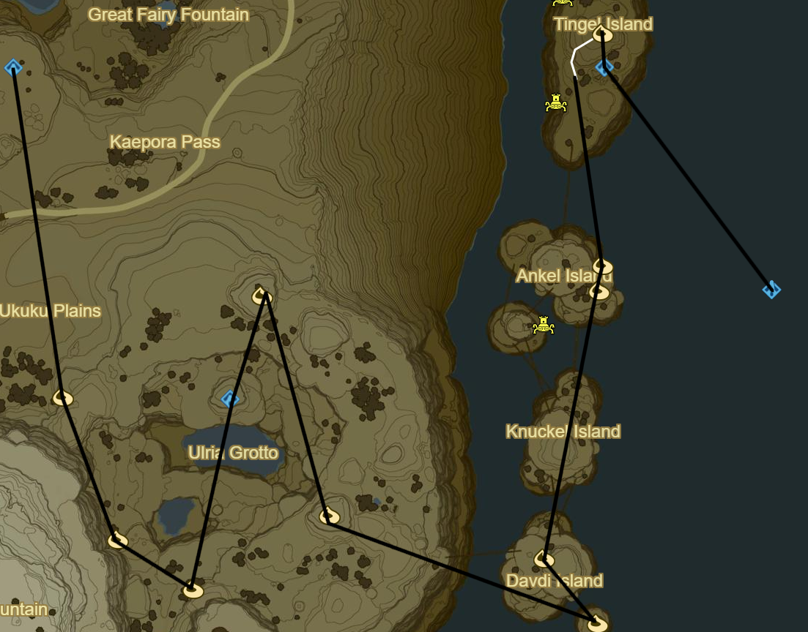
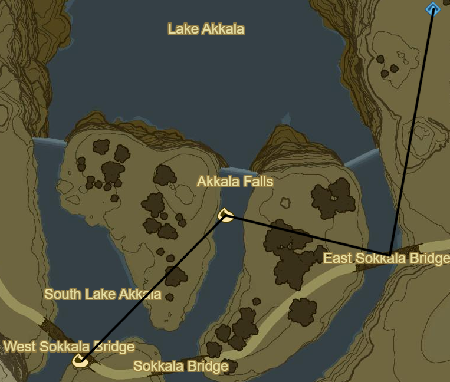

Akkala 1

Korok 417: Rock under slab below Akkala Span
Korok 418: Rock pattern to NE
Korok 419: Rock beneath leaves on S edge of ruins
Korok 420: Rock by cannons on S edge of ruins
Akkala Tower
Korok 421: Rock beneath leaves to W
Korok 422: Rock beneath leaves to NE
Korok 423: Rock beneath Magnesis door to NE
Ze Kasho Shrine to NW (66/120)
South Akkala Stable to E
Side Quest: Little Sister's Big Request
1 Armoranth
1 Warm Darner
1 Cold Darner
1 Electric Darner
Korok 424: Rock atop ruins to E
Korok 425: Apple Trees to N
Korok 426: Rock beneath leaves to W
Korok 427: Fairylights to SW

Korok 428: Fairylights atop tree to NE
Korok 429: Fairylights to E
Korok 430: Magnesis Puzzle to W
Korok 431: Magnesis Puzzle to NW
Recovered Memory 13 - Slumbering Power to NE (6/12)
Tutsuwa Nim Shrine (67/120)
Korok 432: Rock above Spring of Power
Korok 433: Rock beneath leaves to E
Korok 434: Flower order to NE
Korok 435: Acorn in log to W
Korok 436: Magnesis Puzzle to W on mountainside ruins

Korok 437: Balloon beneath cliff to NE
Korok 438: Rock atop tree in middle of Rok Woods to W
Korok 439: Rock beneath slab to W
Korok 440: Race to N
Take picture of Kilton at night in left Skull Eye
Zuna Kai Shrine in right Skull Eye (68/120)
Side Quest: Xenoblade Chronicles 2
The Eastern Sky From the Skull's Left Eye
Korok 441: Rock circle to N
Should be able to max out inventory
Korok 442: Rock under boulder to E
Salvager's Vest to SE
Korok 443: Rock beneath slab to SW
Black Hinox to S (18/40)
Korok 444: Flower order to E
Korok 445: Roll boulders to SE to hole S of previous Korok
Korok 446: Rock beneath leaves to SE

Korok 447: Race to E
Return W to transport Flame to Akkala Ancient Tech Lab
Shrine Quest: The Skull's Eye
Should autocomplete
Korok 448: Fairylights atop Tech Lab
Korok 449: Rock in guardian pile to W
Korok 450: Rock behind cracked boulders to N
Shrine Quest: Trial of the Labyrinth to NE
Tu Ka'loh Shrine (69/120)
Side Quest: EX Teleportion Rumors
Useful when force spawning Stalnox
Diamond Circlet in centre
Beneath labyrinth to S
Korok 451: Rock beneath slab on island to SE
Korok 452: Flower order to S

Korok 453: Magnesis Puzzle to SW
Korok 454: Rock circle up cliff to NW
Katosa Aug Shrine to W (70/120)
East Akkala Stable
Shrine Quest: The Spring of Power
Should autocomplete
Side Quest: A Shady Customer
Warp to Zuna Kai at night to find Kilton in other eye
Take picture of Kilton for Side Quest and return to Katosa Aug Shrine to finish
Korok 455: Race to SW
Korok 456: Pinwheel shooting to SE
Stalnox to SW (19/40)

Korok 457: Rock Pattern to S
Korok 458: Flower trial around bridge to S
Side Quest: From the Ground Up
Place Travel Medallion in Town for future convenience
Speak to Hudson
10 Wood Bundles
Warp to Qua Raym Shrine and go to Southern Mine
Talk to Greyson and Warp back
20 Wood Bundles
Great Fairy Fountain to SE of Tarrey Town
Korok 459: Flower order to S
Korok 460: Apple offering to W
Dah Hesho Shrine to S (71/120)

Korok 461: Apple trees to SE
Korok 462: Race to NE
Korok 463: Flower Trail to NE
Korok 464: Magnesis Puzzle to SE
Shrine Quest: Into the Vortex
Ritaag Zumo Shrine to NW (72/120)
Korok 465: Rock beneath leaves S of Shrine
Warp back to Dah Hesho Shrine

Korok 466: Pinwheel shooting to S
Korok 467: Rock beneath boulder to SE
Korok 468: Fairylights atop tree to SE
Ke'nai Shrine to N (73/120)
Ancient Battleaxe+
Korok 469: Apple Trees to N
Korok 470: Fairylights to SE
Korok 471: Rock beneath cracked boulders to SE of Davdi Island
Korok 472: Lilies NW on Davdi Island
Korok 473: Rock on pillar N on Ankel Island
Korok 474: Rock on scaffold below to N
Korok 475: Flower Trail to N on Tingel Island
Kah Mael Shrine to S (74/120)
Warp back to Dah Hesho Shrine

Korok 476: Rock circle to SW
Korok 477: Rock beneath bridge to SW
Korok 478: Rock beneath metal door to NW
Blue Hinox to W (20/40)
Warp to Oman Au Shrine
Next: [Central Hyrule 1](13 - Central1.md)